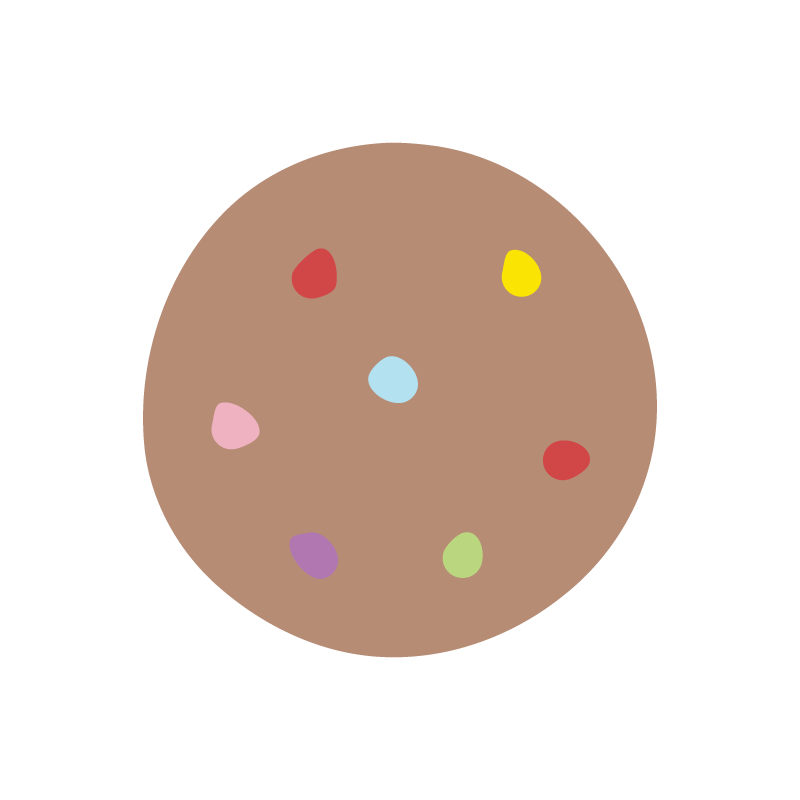

Abdulelah Ghali
Date of Birth: 16 July 2015
HeightL 2ft 6in | Weight: 16KGs
Cookies Class
(4 - 5 years)
D: Developing | M: Meeting | E: Exceeding
In the early years children learn and develop on a daily basis because of their instinctive desire to learn, explore and discover.
Evaluating your child's progress is an important part of our role as early childhood educators. It means deciding what level your child has reached on the progression shown for the objectives in the Teaching Strategies GOLD assessment system.
Teaching Strategies GOLD is an authentic, observational assessment system for children from birth through kindergarten. It helps us to know our children well, what they know and can do, and their strengths, needs and interests. With this information we can guide children's learning by planning engaging experiences that are responsive to individual and group needs.
All children develop at their own pace and achieve objectives at different times and stages of development. Objectives for development and learning are our essential resource to use with any developmentally appropriate curriculum and is our starting point for assessment, as they have always been. Teachers use them to focus their observations and respond appropriately.
Home Sweet Home's assessment system has been developed based on research on the characteristics of child development, and is designed to meet the widely held expectations for each age group. With an ongoing assessment system, we are continually watching, observing and documenting. At certain times, we pause, reflect and take a snapshot of how a child is progressing in relation to the objectives and dimensions of Teaching Strategies GOLD.
All teachers are assessing children by following the same strategies for consistency, reliability and accurate assessments standards.
We trust that you will find our assessment portfolio informative and thought-provoking as we seek to work together on your child’s foundations for life.
Reem Abdulaziz Daghistani
General Director
| Objectives for Development and Learning | First Semester | Second Semester | ||||
| D | M | E | D | M | E | |
| Social-Emotional | ||||||
| Regulates own emotions and behaviors | ||||||
| Manages Feelings | ||||||
| Comforts self by seeking out special object or person | X | |||||
| Is able to look at a situation differently or delay gratification | X | |||||
| Controls strong emotions in an appropriate manner most of the time | X | |||||
| Follows Limits and Expectations | ||||||
| Accepts redirection from adults | X | |||||
| Manages classroom rules, routines and transitions with occasional reminders | X | |||||
| Takes care of own needs appropriately | ||||||
| Demonstrates confidence in meeting own needs | X | |||||
| Establishes and sustains positive relationships | ||||||
| Forms relationships with adults | ||||||
| Manages separation without distress and engages with trusted adults | X | |||||
| Engages with trusted adults as resources and to share ideas and mutual interests | X | |||||
| Responds to emotional cues | ||||||
| Demonstrates concern about the feelings of others | X | |||||
| Identifies basic emotional reactions of others and their causes accurately | X | |||||
| Interacts with peers | ||||||
| Uses successful strategies for entering groups | X | |||||
| Initiates, joins in, and sustains positive interactions with a small group of two to three children | X | |||||
| Makes friends | ||||||
| Plays with one or two preferred playmates | X | |||||
| Establishes a special friendship with one other child, but the friendship might only last a short while | X | |||||
| Objectives for Development and Learning | First Semester | Second Semester | ||||
| D | M | E | D | M | E | |
| Participates cooperatively and constructively in group situations | ||||||
| Balances needs and rights of self and others | ||||||
| Takes turns | X | |||||
| Solves social problem | ||||||
| Seeks adult help to resolve social problems | X | |||||
| Physical | ||||||
| Demonstrates moving skills | ||||||
| Moves purposefully from place to place with control | X | |||||
| Demonstrates balancing skills | ||||||
| Sustains balance during simple movement experiences | X | |||||
| Demonstrates gross-motor manipulative skills | ||||||
| Manipulates balls or similar objects with flexible body movements | X | |||||
| Demonstrates fine-motor strength and coordination | ||||||
| Uses fingers and hands | ||||||
| Uses refined wrist and finger movements | X | |||||
| Uses small, precise finger and hand movements | X | |||||
| Uses writing and drawing tools | ||||||
| Holds drawing and writing tools by using a three-point finger grip but may hold the instrument too close to one end | X | |||||
| Objectives for Development and Learning | First Semester | Second Semester | ||||
| D | M | E | D | M | E | |
| Language | ||||||
| Listens to and understands increasingly complex language | ||||||
| Comprehends language | ||||||
| Responds appropriately to specific vocabulary and simple statements, questions and stories | X | |||||
| Follows directions | ||||||
| Follows simple requests not accompanied by gestures | X | |||||
| Follows directions oftwo ormore stepsthatrelate tofamiliar objects and experiences | X | |||||
| Uses language to express thoughts and needs | ||||||
| Uses an expanding expressive vocabulary | ||||||
| Describes and tells the use of many familiar items | X | |||||
| Speaks clearly | ||||||
| Is understood by most people; may mispronounce new, long or unusual words | X | |||||
| Uses conventional grammar | ||||||
| Uses 3 to 4 word sentences; may omitsome words or use some words incorrectly | X | |||||
| Uses complete four- to six- word sentences | X | |||||
| Tells about another time or place | ||||||
| Tells simple stories about objects, events and people not present; lacks many details and a conventional beginning, middle and end | X | |||||
| Tells stories about othertimes and placesthat have a logical order and that include major details | X | |||||
| Tells elaborate stories that refer to other times and places | X | |||||
| Uses appropriate conversational and other communication skills | ||||||
| Engages in conversation | ||||||
| Engages in conversation of at least three exchanges | X | |||||
| Uses social rules of language | ||||||
| Uses appropriate eye contact, pauses and simple verbal prompts when communicating | X | |||||
| Objectives for Development and Learning | First Semester | Second Semester | ||||
| D | M | E | D | M | E | |
| Cognitive | ||||||
| Demonstrates positive approaches to learning | ||||||
| Attends and engages | ||||||
| Sustains interest in working on a task, especially when adults offer suggestions, questions and comments | X | |||||
| Sustains work onage-appropriate, interesting tasks; can ignoremost distractions and interruptions | X | |||||
| Persists | ||||||
| Practices an activity many times until successful | X | |||||
| Plans and pursues a variety of appropriately challenging tasks | X | |||||
| Solves problems | ||||||
| Observes and imitates how other people solve problems; asksfor a solution and uses it | X | |||||
| Solves problems without having to try every possibility | X | |||||
| Shows curiosity and motivation | ||||||
| Explores and investigates ways to make something happen | X | |||||
| Shows eagerness to learn about a variety of topics and ideas | X | |||||
| Shows flexibility and inventiveness in thinking | ||||||
| Uses creativity and imagination during play and routine tasks | X | |||||
| Changes plan if a better idea is thought of or proposed | X | |||||
| Remembers and connects experiences | ||||||
| Recognizes and recalls | ||||||
| Recallsfamiliar people, place, objects, and actionsfromthe past(a few months before); recalls 1 or 2 items removed from view | X | |||||
| Tells about experiencesinorder,provides details, andevaluatesthe experience; recalls 3 or 4 items removed from view | X | |||||
| Makes connections | ||||||
| Remembersthe sequence of personal routines and experiences with teacher support | X | |||||
| Draws on everyday experiences and appliesthis knowledge to a similar situation | X | |||||
| Objectives for Development and Learning | First Semester | Second Semester | ||||
| D | M | E | D | M | E | |
| Uses classification skills | ||||||
| Places objectsin two or more groups based on differencesin a single characteristic e.g. color, size orshape | X | |||||
| Groups objects by one characteristic; then regroupsthem using a different characteristic and indicates thereasons | X | |||||
| Uses symbols and images to represent something not present | ||||||
| Thinks symbolically | ||||||
| Draws or constructs, and then identifies what it is | X | |||||
| Plans and then uses drawings, constructions, movements and dramatizations to represent ideas | X | |||||
| Engages in sociodramatic play | ||||||
| Acts out familiar or imaginary scenarios; may use props to stand for something else | X | |||||
| Interacts with two or more children during pretend play, assigning roles and discussing actions; sustains play scenariosfor up to 10 minutes | X | |||||
| Literacy | ||||||
| Demonstrates phonological awareness | ||||||
| Notices and discriminates rhyme | ||||||
| Fills in the missing rhyming word; generates rhyming words spontaneously | X | |||||
| Decides whether two words rhyme | X | |||||
| Notices and discriminates alliteration | ||||||
| Sings songs and recites rhymes and refrains with repeating initial sounds | X | |||||
| Shows awareness that some words begin the same way | X | |||||
| Matches beginning sounds of some words | X | |||||
| Notices and discriminates smaller and smaller units of sound | ||||||
| Hears and shows awareness of separate words in sentences | X | |||||
| Hears and shows awareness of separate syllables in words | X | |||||
| Demonstrates knowledge of the alphabet | ||||||
| Identifies and names letters | ||||||
| Objectives for Development and Learning | First Semester | Second Semester | ||||
| D | M | E | D | M | E | |
| Recognizes and names a few letters in own name | X | |||||
| Recognizes and names as many as 10 letters, especially those in own name | X | |||||
| Uses letter–sound knowledge | ||||||
| Identifies the sound of a few letters | X | |||||
| Produces the correct sounds for 10-20 letters | X | |||||
| Shows understanding that a sequence of letters represents a sequence of spoken sounds | X | |||||
| Demonstrates knowledge of print and its uses | ||||||
| Uses and appreciates books | ||||||
| Orients book correctly; turns pages from the front of the book to the back ; recognizes familiar books by their covers | X | |||||
| Knows some features of abook (title, author, illustrator); connects specific books to authors | X | |||||
| Comprehends and responds to books and other texts | ||||||
| Interacts during read-alouds and book conversations | ||||||
| Contributes particular language from the book at the appropriate time | X | |||||
| Asks and answers questions about the text; refers to pictures | X | |||||
| Identifies story-related problems, events, and resolutions during conversations with an adult | X | |||||
| Uses emergent reading skills | ||||||
| Pretends to read a familiar book, treating each page as a separate unit | X | |||||
| Pretends to read, using some of the language from the text; describes the actions across pages, using pictures to order the events; may need prompts from adult | X | |||||
| Pretends to read,reciting language that closely matches the text on each page and using reading-like intonation | X | |||||
| Retell stories | ||||||
| Retells some events from a familiar story with close adult prompting | X | |||||
| Retells familiar stories, using pictures or props as prompts | X | |||||
| Retells a familiar story in proper sequence, including major events and characters | X | |||||
| Objectives for Development and Learning | First Semester | Second Semester | ||||
| D | M | E | D | M | E | |
| Demonstrates phonological awareness | ||||||
| Notices and discriminates rhyme | ||||||
| Fills in the missing rhyming word; generates rhyming words spontaneously | X | |||||
| Decides whether two words rhyme | X | |||||
| Notices and discriminates alliteration | ||||||
| Sings songs and recites rhymes and refrains with repeating initial sounds | X | |||||
| Shows awareness that some words begin the same way | X | |||||
| Matches beginning sounds of some words | X | |||||
| Notices and discriminates smaller and smaller units of sound | ||||||
| Hears and shows awareness of separate words in sentences | X | |||||
| Hears and shows awareness of separate syllables in words | X | |||||
| Demonstrates knowledge of the alphabet | ||||||
| Identifies and names letters | ||||||
| Recognizes and names a few letters in own name | X | |||||
| Recognizes and names as many as 10 letters, especially those in own name | X | |||||
| Uses letter –sound knowledge | ||||||
| Identifies the sound of a few letters | X | |||||
| Produces the correct sounds for 10-20 letters | X | |||||
| Shows understanding that a sequence of letters represents a sequence of spoken sounds | X | |||||
| Demonstrates knowledge of print and its uses | ||||||
| Uses and appreciates books | ||||||
| Orients book correctly; turns pages from the front of the book to the back; recognizes familiar books by their covers | X | |||||
| Knows some features of a book (title, author, illustrator); connects specific books to authors | X | |||||
| Comprehends and responds to books and other texts | ||||||
| Interacts during read-alouds and book conversations | ||||||
| Contributes particular language from the book at the appropriate time | X | |||||
| Asks and answers questions about the text; refers to pictures | X | |||||
| Identifies story- related problems, events, and resolutions during conversations with an adult | X | |||||
| Uses emergent reading skills | ||||||
| Pretends to read a familiar book, treating each page as a separate unit | X | |||||
| Pretends to read, using some of the language from the text; describes the actions across pages, using pictures to order the events; may need prompts from adult | X | |||||
| Pretends to read, reciting language that closely matches the text on each page and using reading-like intonation | X | |||||
| Retell stories | ||||||
| Retells some events from a familiar story with close adult prompting | X | |||||
| Retells familiar stories, using pictures or props as prompts | X | |||||
| Retells a familiar story in proper sequence, including major events and characters | X | |||||
| Demonstrates emergent writing skills | ||||||
| Writes name | ||||||
| Controlled linear scribbles | X | |||||
| Objectives for Development and Learning | First Semester | Second Semester | ||||
| D | M | E | D | M | E | |
| Mock letters or letter-like forms | X | |||||
| Letter strings | X | |||||
| Partially accurate name | X | |||||
| Accurate name | X | |||||
| Writes to convey meaning | ||||||
| Controlled linear scribbles | X | |||||
| Mock letters or letter-like forms | X | |||||
| Letter strings | X | |||||
| Early invented spelling | X | |||||
| Mathematics | ||||||
| Uses number concepts and operations | ||||||
| Counts | ||||||
| Verbally counts up to 10 objects accurately, using one number name for each object | X | |||||
| Verbally counts to 20; counts 10 to 20 objects accurately; knows the last number; states how many in all; tells what number comes next in order by counting | X | |||||
| Quantifies | ||||||
| Recognizes and names the number of items in a small set (up to five) instantly; combines and separates up to five objects and describes the parts | X | |||||
| Makes set of 6-10 objects and then describes the parts; identifies which part has more, less or the same (equal); counts all or counts on to find out how many | X | |||||
| Connects numerals with their quantities | ||||||
| Recognizes and names a few numerals | X | |||||
| Identifies numerals to 5 by name and connects each to counted objects | X | |||||
| Identifies numerals to 10 by name and connects each to counted objects | X | |||||
| Explores and describes spatial relationships and shapes | ||||||
| Understands spatial relationships | ||||||
| Follows simple directions related to proximity (beside, between, next to) | X | |||||
| Uses and responds appropriately to positional words indicating location, direction and distance | X | |||||
| Understands shapes | ||||||
| Identifies a few basic shapes (circle, square, triangle) | X | |||||
| Describes basic two- and three- dimensional shapes by using own words; recognizes basic shapes when they are presented in a new orientation | X | |||||
| Compares and measures | ||||||
| Makes simple comparisons between two objects | X | |||||
| Compares and orders a small set of objects as appropriate according to size, length, weight, area or volume; knows usual sequence of basic daily events and a few ordinal numbers | X | |||||
| Demonstrates knowledge of patterns | ||||||
| Copies simple repeating patterns | X | |||||
| Extends and creates simple repeating patterns | X | |||||